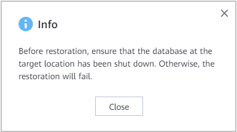

This section describes how to restore an Informix instance that has been backed up to the original location or a new location.
Context
Backup, archive, and replication copies can be used for restoration. Restoration to the original or a new location is supported. If you use replication copies or archive copies generated by replication copies, the data cannot be restored to the original location.
Prerequisites
Before the restoration, shut down the Informix database. If the Informix cluster is an HDR cluster, shut down the Informix database on both the active and standby nodes.
- Use PuTTY to log in to the Informix database host and switch to the database installation user.
- Run the source ~/.bash_profile command to configure environment variables.
- Run the onstat -l command to check the status of the Informix database.
If On-Line (Prim), Read-Only (sec), or On-Line is displayed in the command output, the database is not shut down. Proceed with subsequent operations to shut down the database.


On-Line is displayed if the database of the Informix single-node system is not shut down. On-Line (Prim) is displayed if the database is not shut down on the primary node of the Informix cluster. Read-Only (sec) is displayed if the database is not shut down on the secondary node of the Informix cluster.
- Run the onmode -ky command to shut down the database.
Procedure
- Choose Explore > Copy Data > Databases > Informix.
- You can search for copies by Informix instance resource or copy. This section describes how to search for copies by resource.
On the Resources tab page, locate the resource to be restored by resource name and click the name.
- Select the resource for copy-based restoration.
- Specify a copy or a point in time for restoration.
- Restoration using a specified copy
- Select the year, month, and day in sequence to find the copy.
If
 is displayed below a month or day, a copy is generated in the month or on the day.
is displayed below a month or day, a copy is generated in the month or on the day. - On the copy data page, click
 and choose in the row where the desired copy resides.
and choose in the row where the desired copy resides.
- Select the year, month, and day in sequence to find the copy.
- Restoration to a specified point in time
- Select the year, month, and day in sequence to find the copy.
If
 is displayed below a month or day, a copy is generated in the month or on the day.
is displayed below a month or day, a copy is generated in the month or on the day. - On the copy data page, click
 . In the blue part on the timeline, select a copy and click .
. In the blue part on the timeline, select a copy and click . - For 1.5.0, a maximum of 100 copies can be displayed on the timeline. You can click
 to view all copies.
to view all copies. - During point-in-time recovery, the information about the copy used for restoration cannot be obtained on the management page. Therefore, users cannot view the copy information of the restoration job on pages of the restoration job and related events.
- For 1.5.0, a maximum of 100 copies can be displayed on the timeline. You can click
- Restore the Informix database to its original or a new location.Table 1 describes the related parameters.
Table 1 Restoring the Informix database Parameter
Description
Restore To
Select either Original location or New location.
Location
If you select restoration to Original location, the original location is displayed.
Target Instance
Target instance for restoration, which is mandatory if you select New location for the Restore To parameter.
- Click OK.
- In the displayed dialog box, confirm the information and click Close.

- Select the year, month, and day in sequence to find the copy.
- Restoration using a specified copy
- Click OK.